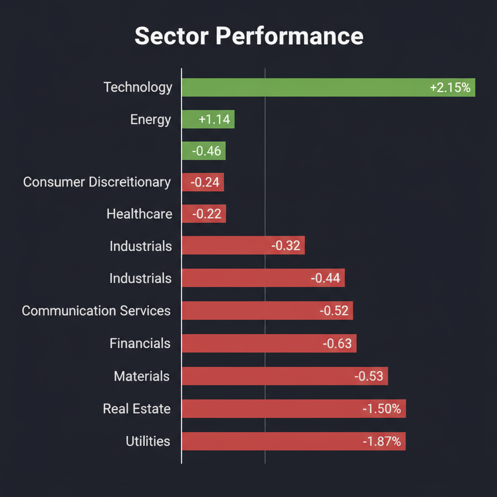
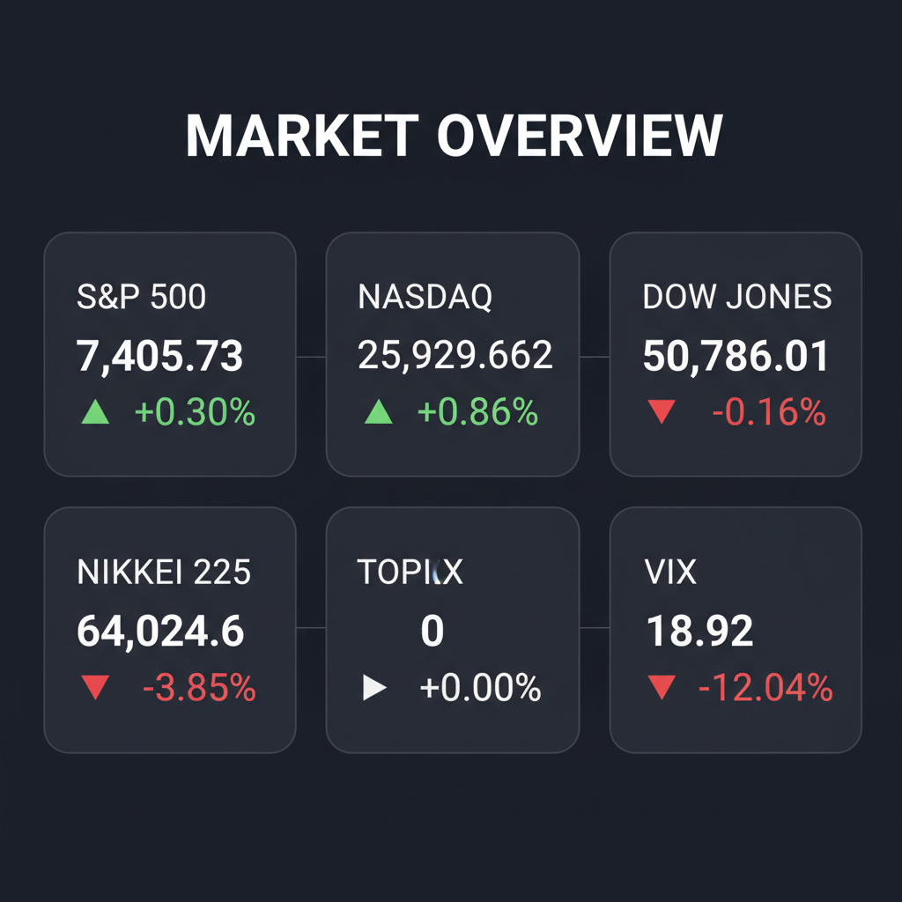

各エージェントがWeb調査結果を踏まえて独立に10段階評価した結果です。平均7以上=強気、4〜6.9=中立、4未満=弱気。
| 銘柄 | ファンダメンタルズアナリスト | テンバガーハンター | マクロエコノミスト | テクニカルストラテジスト | リスクマネージャー | 平均 | 判定 |
| 6254.T | 8 過去最高益更新期待、半導体インフラ、押し目買い好機 | 5 | 8 過去最高益更新予想、半導体インフラ、押し目買い好機 | 9 最高益更新、半導体需要 | 9 過去最高益予想、半導体インフラ、押し目買い |
7.8 | 強気 |
| 2432.T | 4 利益率急低下、成長投資負担、様子見推奨 | 5 | 4 利益率急低下、成長性懸念、様子見推奨 | 4 利益率急低下、成長懸念 | 4 利益率急低下、成長投資負担大、様子見 |
4.2 | 中立 |
| 5204.T | 3 成長ストーリー不明瞭、株価ボラティリティ大 | 5 | 3 成長ストーリー不明確、ボラティリティ大、推奨外 | 5 業績横ばい、分析不足 | 3 分析不足、ボラティリティ大、推奨外 |
3.8 | 弱気 |
| 9474.T | 2 業績低迷、目標株価下方修正、バリュートラップ懸念 | 5 | 2 業績低迷、目標株価下方修正、下降トレンド | 2 目標株価下方修正、業績停滞 | 2 目標株価下方修正、業績停滞、弱気トレンド |
2.6 | 弱気 |
エージェントが推奨した中小型株について、Google検索で最新情報を調査した結果です。
ゼンリン（9474.T）に関する投資判断に必要な最新情報をまとめました。
ゼンリン（9474.T）は、地図データベース関連事業と一般印刷関連事業の2つのセグメントで事業を展開しています。地図データベース関連事業では、住宅地図帳、応用地図、住宅地図データベース、インターネットサービス向け地図データ、カーナビゲーション用データ、スマートフォン向けサービスなどを提供しています。また、一般印刷物の製造・販売、仕入商品販売、ダイレクトメールの編集・発送、マーケティングソリューションの提供なども行っています。同社は住宅地図を唯一全国展開しており、カーナビ向け3D高精度地図に強みを持っています。
* 時価総額: 2026年6月現在、約490億円から570億円程度です。 * 業界でのポジション: 地図情報業界のリーディングカンパニーであり、特に住宅地図においては全国で唯一の展開をしています。
2026年3月期の連結業績は、売上高642.77億円（前年同期比0.1%減）、営業利益35.02億円（同10.7%減）、当期純利益27.38億円（同5.1%増）となりました。モビリティソリューション関連の減収が影響しましたが、公共ソリューション関連が好調でした。自己資本比率は67.9%に上昇し、財務基盤は安定しています。 2027年3月期は、売上高660億円（前年同期比2.7%増）、営業利益36億円（同2.8%増）、経常利益39億円（同0.9%増）、当期純利益25億円（同8.7%減）を見込んでいます。 モビリティソリューション関連の厳しい事業環境を想定しつつも、パッケージ商品やストック型サービスの拡大、ソリューション営業強化、新商材投入で増収を目指す方針です。増収に伴う売上原価増に加え、高度時空間データベース構築の成長投資やベースアップ継続による人件費増により、利益は伸びにくい見通しです。
直近1-2週間（2026年6月上旬）の重要なニュースとしては以下のものがあります。 * 2026年6月2日、日系大手証券がゼンリンのレーティングを「中立」に据え置きましたが、目標株価を1,150円から916円に引き下げました。 * 2026年5月25日には、2027年3月期経常予想が対前週比で10.3%下降したというアナリスト予想の変更がありました。 * 2026年5月19日には、第66回定時株主総会招集ご通知が開示されています。
* 2026年6月2日現在、日系大手証券によるレーティングは「中立」で、目標株価は916円に設定されています。 * アナリストコンセンサスでは、目標株価は958円（2026年4月27日時点）であり、「中立」と評価されています。
* 競合: HDマップ領域では競合他社の参入や代替技術・ソリューションの拡大がリスクとして挙げられます。更新サイクルの短縮や低コスト計測などで優位性を維持できない場合、価格交渉力や受注獲得に影響し、採算性が変動する可能性があります。 * 事業環境: モビリティソリューション関連事業において厳しい事業環境が続く見通しです。 * 財務上の懸念: 高度時空間データベース構築への成長投資や人件費増により、利益が伸び悩む可能性があります。 また、プロジェクト型売上の時期変動リスクも指摘されており、新規整備の一巡や中東地域等での実施時期の後ろ倒しにより、売上が減少する可能性があります。
ゼンリンの株価は、2026年1月16日に年初来高値1,098円を記録しましたが、その後は下落傾向にあります。 特に、2026年6月4日には年初来安値844円を記録しています。 2026年6月8日時点では858円で取引されており、直近5日前比で-1.61%、20日前比で-1.83%と下落トレンドにあります。
免責事項：これは投資助言ではありません。投資判断はご自身の責任において行ってください。
銘柄コード2432.T（株式会社ディー・エヌ・エー）に関する投資判断に必要な最新情報をまとめます。
株式会社ディー・エヌ・エー（DeNA）は、東京に本社を置くインターネット関連企業です。スマートフォン向けゲームアプリの開発・運営を中核事業としています。主な事業セグメントはゲーム事業、ライブストリーミング事業（Pococha、IRIAMなど）、スポーツ事業（プロ野球球団「横浜DeNAベイスターズ」、プロバスケットボール「川崎ブレイブサンダース」の運営など）、ヘルスケア・メディカル事業、オートモーティブ、AIなど多岐にわたります。創業以来の「永久ベンチャー」精神を持ち、AIを最重要戦略と位置づけ、既存事業の強化とAIネイティブな新規事業の創出による「非連続な成長」を目指しています。
時価総額は、2026年3月2日時点で約2,771.4億円です。
業界でのポジションとしては、ゲームを主力としながらも、ライブストリーミング、スポーツ、ヘルスケアといった多様な領域で事業を展開している点が特徴的で、エンターテインメント領域と社会課題解決領域の両軸で事業を推進しています。
2026年3月期（通期）の連結決算では、売上高が1,477億円、営業利益が186.94億円、経常利益が257.64億円、最終利益が190億円となりました。最終利益は前の期比で21.3％の減益となっています。
特に直近の四半期（2026年1-3月期(4Q)）では、連結最終利益が前年同期比73.6％減の22.2億円に大きく落ち込み、売上営業利益率も前年同期の16.9％から5.4％へ急低下しました。
2027年3月期の業績見通しについては、売上高は1,540億円を見込む一方、営業利益は減少する見通しです。これは、将来の成長に向けた積極的な投資を行う方針であり、利益率の低下リスクが織り込まれているためと説明されています。
直近の重要なニュースとしては以下の点が挙げられます。 * 2026年6月3日、2026年5月度の自己株式取得状況を開示しました。 * プロ野球球団「横浜DeNAベイスターズ」に関するニュースが多く、2026年6月6日には4本塁打で大勝し、3週間ぶりの2連勝を飾りました。また、6月8日には相川監督が遅延行為により退場処分を受け、厳重注意と制裁金10万円の処分が科されたと報じられました。 * 2026年4月には、AI時代の人材戦略として、新卒採用コースの再編（AIジェネラリストコース新設）やAIプロダクト開発研修、ツール利用支援などの取り組みを発表しています。
Investing.comのアナリストによるコンセンサス評価は「買い」で、4人のアナリストのうち1人が買い推奨、3人が保持を推奨しています。平均株価ターゲットによれば、ディー・エヌ・エーには+11.01%の上昇余地がある可能性が示されています。 moomoo証券のアナリスト評価では「強気」が25.00%、「中立」が75.00%となっています。
DeNAの主なリスク要因として、以下の点が挙げられます。 * ゲーム事業の変動性: 新規タイトルのリリース初期の売上から反動による減収減益や、高コスト化する開発費などが収益の変動要因となります。過去にはゲーム事業で大規模な減損損失を計上したこともあります。 * 成長投資の先行: 将来の成長を目指した積極的な投資は、短期的に利益率を押し下げる可能性があります。 * 競合環境の激化: ライブストリーミング事業では「Pococha」が黒字化しているものの、他社との競争が激化しています。 また、インターネット業界全般で、グリーやサイバーエージェントなどの有力企業との競争が存在します。 * M&Aに伴うリスク: 新規事業をM&Aによって取り込む際、その事業固有のリスクが加わる可能性があります。 * 規制・コンプライアンス: インターネットおよびAI関連技術の進化に伴う法規制や社会の変化への対応、コンプライアンスの遵守が重要課題です。
直近の株価動向としては、2026年6月2日から6月5日にかけては2,711円から2,666.5円へと1.64%下落しました。しかし、6月8日には2,680円（前日比+0.51%）と小幅に反発しています。 52週高値は2,885円、52週安値は2,200円です。
Yahoo!ファイナンスのAI値動き解説では、今日の株価はテクニカル要因100%で「上昇予想」とされています。
「5204.T」は石塚硝子株式会社のティッカーコードですが、検索結果の多くが「日本板硝子 (5202.T)」に関する情報を示しており、ユーザーが求める銘柄と異なる可能性があります。 しかし、いくつか「5204.T」に関する情報も存在し、それが石塚硝子株式会社のものであることが確認できます。
まず、ユーザーが意図している銘柄が「石塚硝子 (5204.T)」であると仮定して、得られた情報をもとにまとめます。 もしユーザーが日本板硝子 (5202.T) の情報を求めている場合は、再度その旨を伝えていただくよう促す必要があるでしょう。
以下、石塚硝子 (5204.T) の情報としてまとめます。
1. 企業概要 * 事業内容: 石塚硝子は、ガラス瓶、ガラス食器、紙製包装材、プラスチック容器、セラミック製品の製造・販売を日本国内外で行っています。PETボトル用プリフォーム、PETボトル用メカニカルリサイクル樹脂、陶磁器、金属キャップ、牛乳やジュースなどの飲料用紙製包装材などを提供しており、紙製包装材の充填機代理業も手掛けています。主な事業セグメントは「包装・容器」に属し、「一般消費財」セクターに分類されます。 * 時価総額: 2026年5月16日時点での時価総額は121.03億円です。 2026年6月8日時点の時価総額は125.1億です。 * 業界でのポジション: 包装・容器業界に属しています。
2. 直近の業績・決算情報 * 決算発表日: 2026年3月期の決算は2026年4月23日に発表されました。 * 売上: 2026年3月期の売上高は595.1億円で、前年 (559.9億円) から6.28%増加しました。 * 利益: 2026年3月期の純利益は26.2億円で、前年から15.22%減少しました。 * 成長率: 売上高は前年比6.28%増、純利益は前年比15.22%減となっています。
3. 最新ニュース・材料 直近1～2週間で5204.Tに特化した重要なニュースは見当たりませんでした。
4. アナリスト評価・目標株価 * Morningstarのアナリストは現在、5204.Tをカバーしていません。 * ValueInvesting.ioのPeter Lynchのフェアバリュー評価によると、2026年5月16日時点でのフェアバリューは15,515.4円で、現在の市場価格2,868円に対して441%の上昇余地があるとされています。 これは、平均収益成長率が359.4%と算出されたことに基づいています。 StockInvest.usは2026年5月22日時点で、短期および長期の移動平均線から売りシグナルが出ており、よりネガティブな予測を示していると評価しています。
5. リスク要因 * StockInvest.usによると、短期および長期の移動平均線から売りシグナルが出ていることがリスク要因として挙げられます。
6. 株価の最近の動き（直近のトレンド） * 2026年5月22日時点で、株価は現在の水準またはそれ以上に留まれば、予測ターゲットは今後数日間でポジティブに変化し始めるとされています。 * 2026年3月18日には配当落ち日を迎えました。 * 52週間の株価レンジは2,387.00円から4,135.00円です。
野村マイクロ・サイエンス（6254.T）に関する最新情報は以下の通りです。
現在の時価総額は、約1,630億円から1,809億円の範囲です。
業界においては、超純水製造装置で国内トップクラスのシェアを持ち、特に半導体産業においてニッチトップ企業として世界で戦っています。
2027年3月期（今期予想） * 今期の連結経常利益は前期比2.7倍の150億円に急拡大し、2期ぶりに過去最高益を更新する見通しです。 * 連結売上高は72.5%増の970億円、営業利益は140.0%増の160億円、純利益は190.7%増の111億円となる見込みです。 * 年間配当は前期の81円から4円増配の85円とする方針です。